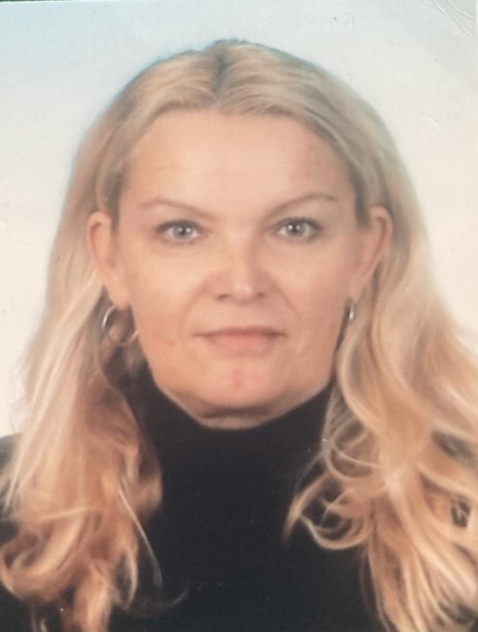

Jsme nezisková organizace, která poskytuje komplexní podporu pěstounským rodinám.
Pověření k výkonu sociálně-právní ochrany v rozsahu: Poskytování odborné poradenské a další pomoci a podpory osobě, s níž pověřená osoba uzavřela dohodu o výkonu pěstounské péče (dle § 47b zákona o SPOD), při výkonu pěstounské péče a sledování výkonu pěstounské péče, a poskytování pomoci osobě, jíž byl blíže určen obsah a zaměření povinnosti zvyšovat si znalosti a dovednosti v oblasti výchovy a péče o dítě podle § 12 odst. 2 zákona o SPOD.
Podílíme se na propagaci náhradní rodinné péče a organizujeme přednášky pro širokou veřejnost zaměřené na výchovu a vývoj dětí, vztahy a komunikaci v rodině.
Podpora osob pečujících, osob v evidenci a dětí jim svěřených, jejich rodičů a biologických dětí osob pečujících a osob v evidenci. Podpora je poskytována zejména formou doprovázení, poradenství a dalších odborných služeb s cílem napomáhat naplňování práva dítěte vyrůstat ve stabilním, bezpečném a podnětném rodinném prostředí.
Podpora:

vedoucí SPOD v Centrum JUSTY z.ú.
Několik let pracovala ve farmaceutickém odvětví. V posledních letech se ale již dlouhodobě věnuje práci s dětmi a rodinami. Sama je maminka tří dětí.
Vystudovala VŠ zdravotní, psychosociálních studií a sociální práce. Absolvovala pětiletý psychoterapeutický výcvik, Daseinsanalytický výcvik – psychoterapie, roční krizovou intervenci (Systemický přístup při práci s krizí, 2019–2020), zkoušku odborné způsobilosti při sociálně-právní ochraně dětí a studium na BIVŠ a.s. Bankovní institut – obor ekonomie a managment ve zdravotnictví a sociálních službách. Pravidelně se účastní supervizí, akreditovaných seminářů a dalších odborných kurzů.
Při práci je pro Zuzanu důležité bezpečí a komplexní podpora klientů. Má dlouhodobé zkušenosti v oblasti sociálně-právní ochraně dětí. V Centru JUSTY vede projekty pro náhradní rodiny, koordinuje práci s náhradními rodinami a také je klíčovou pracovnicí pro několik náhradních rodin.
klíčová pracovnice
Maminka dvou dětí. Je absolventkou Palackého univerzity v Olomouci, kde vystudovala obor Sociální pedagogika. V oblasti psychoterapie se dlouhodobě vzdělává a věnuje, jak individuální, tak skupinové práci. Absolvovala sebezkušenostní výcvik zaměřený na individuální a skupinovou terapii v rámci daseinsanalytického přístupu. Dále si doplnila vzdělání v kurzu komplexní krizové intervence a pravidelně se účastní supervizí, akreditovaných seminářů a dalších odborných kurzů.
Pracovní i osobní zkušenosti ji dávají hlubší vhled a dostatek praxe k tomu, aby Vás mohla provázet nelehkým obdobím, které se často dotýká nejen dítěte, ale rodiny jako celku. Ve své práci klade důraz na vytvoření bezpečného a respektujícího prostoru pro vyjádření všech zúčastněných stran. Každý člen rodiny má své vlastní emoce, potřeby i prožívání náročných či krizových situací, ve kterých se právě nachází.
Cílem Marcely je, aby byl každý Váš hlas dostatečně vyslyšen, pochopen a přijat, a abyste na tuto cestu nemuseli být sami. Věří ve smysl sdílení a v sílu bezpečného prostoru, kde může člověk svobodně mluvit o čemkoliv bez obav z hodnocení či odsouzení. Terapie pro ni není jen profesí, ale i životní cestou. Věří, že každý člověk si zaslouží mít někoho, komu může důvěřovat, a kdo ho bude na jeho cestě podporovat.
Pracovní zkušenosti získala mimo jiné při práci s klienty v oblasti adiktologie, konkrétně v Psychiatrické nemocnici Bohnice. Tato zkušenost jí přinesla hluboký vhled do problematiky závislostí a krizových situací.
Ke každému člověku přistupujeme s úctou, respektem a bez předsudků. Respektujeme jeho jedinečnost, potřeby, názory, hodnoty a životní situaci.
Chráníme důstojnost, soukromí a práva klientů. Informace, které se při práci dozvídáme, zachováváme v důvěrnosti v souladu s právními předpisy.
Ke všem klientům přistupujeme rovnocenně a bez diskriminace. Respektujeme rozdíly mezi lidmi a jejich individuální potřeby.
Podporujeme klienty v tom, aby mohli o svém životě rozhodovat podle svých možností a schopností. Naším cílem není rozhodovat za ně, ale pomáhat jim hledat vlastní řešení.
Usilujeme o vytváření bezpečného prostředí, ve kterém se klient může otevřeně vyjádřit a požádat o pomoc. S klientem budujeme profesionální vztah založený na důvěře a respektu.
Své služby poskytujeme odpovědně, odborně a v souladu s platnými právními předpisy a profesními standardy. Průběžně rozvíjíme své znalosti a dovednosti a využíváme také supervizi a spolupráci s dalšími odborníky.
Respektujeme zkušenosti a názory kolegů a dalších odborníků. Při řešení situací, které se týkají dítěte a rodiny, podporujeme spolupráci všech, kteří mohou přispět k nalezení vhodného řešení.
Jsme odpovědní za své jednání, rozhodování a způsob poskytování podpory. Při práci vždy zohledňujeme nejlepší zájem dítěte, potřeby rodiny a ochranu práv všech zúčastněných.
Etický kodex je pro nás nejen souborem pravidel, ale především závazkem poskytovat podporu dětem a pěstounským rodinám s respektem, důvěrou, odborností a lidským přístupem.